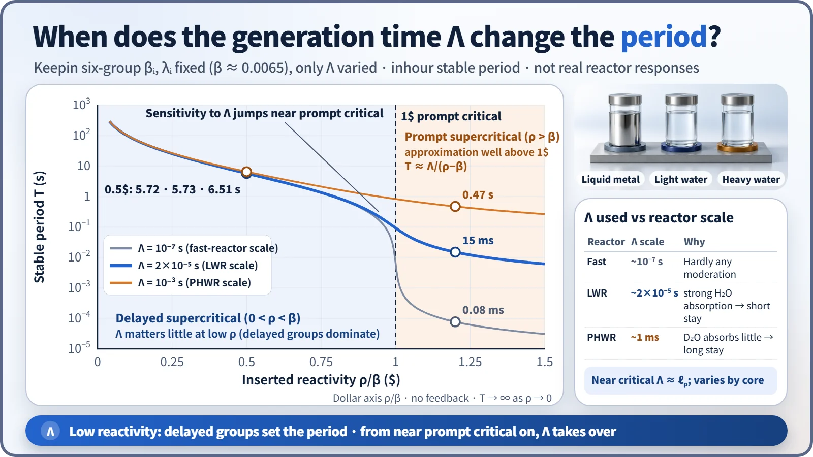
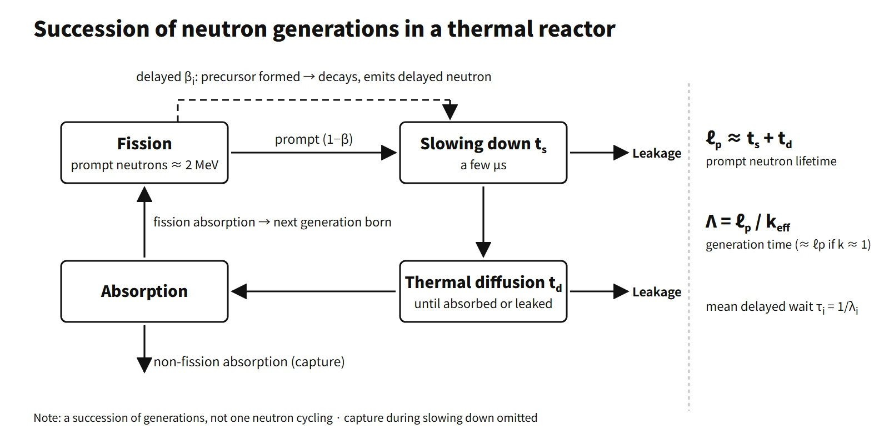

Reactor Physics & Kinetics · C-RX-020
Neutron Generation Time and Prompt Neutron Lifetime — Separate ℓp, Λ and ℓ̄ and Reactor Kinetics Falls into Place
About 2×10⁻⁵ s for prompt neutrons in an LWR, about 0.085 s once delayed neutrons are counted, and why Λ only matters near and above prompt critical.
The prompt neutron lifetime ℓp is the mean time from the birth of a prompt neutron until it disappears by absorption (in a finite reactor, by absorption or leakage); the prompt neutron generation time Λ = ℓp/k is the mean interval from birth until that neutron causes the next fission. In a thermal reactor ℓp is the slowing-down time plus the diffusion time, about 2×10⁻⁵ s in a light-water reactor. Including delayed neutrons, the mean generation time ℓ̄ = ℓp + Σβi/λi lengthens to about 0.085 s.
In short: "The mean time from the birth of a prompt neutron to its loss (absorption or leakage), about 10⁻⁵ s in an LWR; including delayed neutrons the mean generation time grows to about 0.1 s, which is what makes power control possible."
Principle and mechanism
First, separate the three times
Textbooks and papers mix the terms "generation time", "lifetime" and "mean lifetime", so it is worth stating at the start which quantity is meant. In particular, "mean generation time" can mean either Λ (prompt) or ℓ̄ (including delayed neutrons); when a precursor mean life enters the calculation, ℓ̄ is meant.
| Symbol | Name | Definition | Typical LWR value |
|---|---|---|---|
| ℓp | Prompt neutron lifetime | Birth → absorption or leakage | About 2×10⁻⁵ s |
| Λ | Prompt neutron generation time | Birth → absorption causing fission, ℓp/k | Equal to ℓp when k ≈ 1 |
| ℓ̄ | Mean generation time (including delayed) | Weighted mean of prompt and delayed paths | About 0.085 s |
When k > 1 the neutron population grows by a factor k in one generation, so the generation interval is shorter than the lifetime (Λ = ℓ/k). The point kinetics equation dn/dt = [(ρ−β)/Λ]n + Σλici contains Λ; putting an ℓ̄ of order 0.08 s in place of Λ counts the delayed-neutron effect twice.
What sets ℓp
A prompt neutron in a thermal reactor is born at about 2 MeV, slows down, then diffuses as a thermal neutron until it is absorbed. So ℓp ≈ ts + td. The slowing-down time ts is short, a few μs (about 7 μs in water, constant-ξΣs approximation); most of the lifetime is the mean diffusion time td spent as a thermal neutron before absorption or leakage (Lamarsh Eq. 7.2: in an infinite thermal reactor ℓp ≈ td).
- td = λa/v = 1/(Σav). For 1/v absorption it is independent of energy: td = 1/(Σa(E₀)v₀).
- Moderator alone (Lamarsh Table 7.1): water 2.1×10⁻⁴ s, Be 3.9×10⁻³ s, graphite 0.017 s, heavy water (with 0.25 % light water) 4.3×10⁻² s.
- With fuel mixed in, td = tdM(1−f) (f: thermal utilization). An infinite critical homogeneous U-235–water reactor (f = 0.484) has ℓp = 1.08×10⁻⁴ s (Lamarsh Example 7.1); a commercial PWR with f ≈ 0.9 has about 2×10⁻⁵ s.
- In a finite reactor leakage shortens the lifetime: ℓ = 1/[vΣa(1 + L²B²)].
- A fast reactor has almost no slowing down, so ℓp is of order 10⁻⁷ s.
The mean free path λ = 1/Σ is a distance (cm); the lifetime is a time. They are linked by t = λa/v: in water λa = 1/0.0197 = 50.8 cm, divided by 2,200 m/s, gives 2.3×10⁻⁴ s, the same order as Table 7.1.
With prompt neutrons only: T = ℓp/(k∞−1)
In an infinite homogeneous reactor with prompt neutrons only, the fission rate grows as NF(t) = NF(0)et/T. After one lifetime ℓp the fission rate is k∞ times larger, so NF(t + ℓp) = k∞NF(t); the Taylor expansion NF + ℓp·dNF/dt ≈ k∞NF gives dNF/dt = [(k∞−1)/ℓp]NF, i.e. T = ℓp/(k∞−1). With ℓp = 2×10⁻⁵ s and k∞ = 1.001, T = 0.02 s, and after one second the power is e⁵⁰ (about 5×10²¹) times larger.
Adding the delayed path: ℓ̄ = ℓp + Σβi/λi
The fraction β appears only after waiting for precursor decay, so ℓ̄ = (1−β)ℓp + Σβi(ℓp + 1/λi) = ℓp + Σβi/λi holds exactly. With Keepin's six groups (β = 0.0065), Σβi/λi = 0.0848 s and τ̄ = 13.0 s, so ℓ̄ ≈ 0.085 s, about 4,200 times ℓp. Worked example: with τ̄ = 12.5 s and ℓp = 2.1×10⁻⁵ s (slowing-down time 10⁻⁶ s plus diffusion time 2×10⁻⁵ s), ℓ̄ = 0.0813 s. For small reactivity T ≈ ℓ̄/ρ ≈ 85 s (ρ = 0.001), a controllable rate. This is a simple approximation; the exact period comes from the inhour equation.
What Λ does in reactor kinetics
Keeping Keepin's six-group βi and λi (β ≈ 0.0065) and changing only Λ to 10⁻⁷, 2×10⁻⁵ and 10⁻³ s, the six-group inhour equation ρ = ωΛ + Σβiω/(ω+λi) shows where Λ matters. This isolates the effect of Λ; it is not a comparison of the real responses of different reactor types.
- Low reactivity (delayed supercritical): at 0.5$ the periods are 5.72, 5.73 and 6.51 s, a small difference, because the six delayed groups set the period. With Λ as long as 1 ms, however, the period at 0.8$ is already 1.72 s, about 1.9 times longer than the 0.92–0.95 s of the other two.
- Near and above prompt critical: at 1.2$ the periods split widely, 0.08 ms, 15 ms and 0.47 s. Well above 1$ the chain is sustained by prompt neutrons alone, so T ≈ Λ/(ρ−β), proportional to Λ. Just above 1$ this approximation does not hold.
- Λ's share even below 1$: the prompt jump right after a step insertion ends with time constant Λ/(β−ρ) (0.5$, PWR about 6 ms).

What it means in a plant
- Normal operation and startup: reactivity is kept far below 1$, so the period is set by βeff and the precursors. In startup-rate management Λ is practically invisible.
- Reactivity accidents: when about 1$ or more is inserted, as in a rod ejection (SRP 15.4.8), the rate of power rise and the peak width depend on Λ, and Doppler feedback ends the transient. Safety analyses enter βeff and Λ as conservative beginning- and end-of-cycle values. An example cited for large-PWR accident-analysis input is ℓ ≈ 19.5 μs with βeff 0.0051 (AP1000 first cycle).
- Burnup effects: as boron concentration falls, thermal absorption decreases and Λ lengthens somewhat toward end of cycle, while Pu build-up reduces βeff. The same Δk becomes a larger dollar value, so end-of-cycle reactivity accidents are the conservative case.
- Reactor-type comparison: in a heavy-water reactor (CANDU), heavy-water absorption is small, so Λ is about 0.9–1 ms, about 50 times that of a PWR, and even prompt-supercritical transients are relatively slow. A fast reactor has Λ ~10⁻⁷ s and a small Pu-239 β (about 0.0021), so the design of prompt negative feedback (Doppler, fuel expansion) is central to safety.
- Measurement and calculation: at delayed criticality, Λ is measured from the prompt decay constant α₀ = βeff/Λ (Rossi-α, pulsed-neutron methods); for a PWR it is about 0.0065/2×10⁻⁵ ≈ 325 s⁻¹. The point kinetics equations are stiff, with Λ (10⁻⁵ s) and 80 s time constants side by side, so implicit integration is used.
Regulatory and design criteria
The following US references are examples of how kinetics parameters enter design review and accident analysis.
- NUREG-0800 SRP 4.3 (Nuclear Design): reviews the calculation methods and uncertainties of kinetics parameters such as βeff and the prompt neutron lifetime. SRP 15.4.1 and 15.4.2 (uncontrolled rod withdrawal) and 15.4.8 (rod ejection) use these values as analysis inputs.
- 10 CFR 50 Appendix A: GDC 11 (reactor inherent protection), GDC 28 (reactivity limits).
- Reactivity-accident acceptance criteria: RG 1.77 (1974) was replaced by RG 1.236 in 2020. The acceptance criteria have changed over time; the physics of the generation time has not.
- FSAR Chapter 15: tabulates event-specific kinetics parameters (minimum and maximum βeff, prompt neutron lifetime); values are unit- and cycle-specific.
Easily confused pairs
| Prompt neutron lifetime ℓp | Generation time Λ | Mean generation time ℓ̄ | Mean precursor lifetime τ̄ | |
|---|---|---|---|---|
| Definition | Birth → loss | Birth → absorption causing fission | Weighted mean of prompt and delayed | Mean precursor decay time, Σ(βi/λi)/β |
| Formula | ≈ ts + td | ℓp/k | ℓp + Σβi/λi | 1/λ weighted mean |
| LWR value | About 2×10⁻⁵ s | About 2×10⁻⁵ s | About 0.085 s | About 13 s |
| Where used | Prompt-only period ℓp/(k−1) | Point kinetics, Rossi-α | Small-ρ period approximation | One-group λ = 1/τ̄ |
| Mean lifetime (time) | Mean free path (distance) | |
|---|---|---|
| Definition | Mean time until loss | Mean distance travelled before a reaction, λ = 1/Σ |
| Relation | t = λa/v | λa = v·t |
| Thermal neutrons in water | About 2×10⁻⁴ s | λa about 51 cm |
Key points at a glance
- Prompt neutron lifetime ℓp: mean time from birth of a prompt neutron to absorption or leakage; in a thermal reactor ℓp ≈ ts + td ≈ td.
- Diffusion time: td = 1/(vΣa); with fuel tdM(1−f); finite reactor 1/[vΣa(1+L²B²)].
- Generation time Λ: birth to absorption causing fission, Λ = ℓp/keff; the time constant of the point kinetics equation.
- Typical values: fast reactor ~10⁻⁷ s, LWR ~2×10⁻⁵ s, PHWR ~1 ms.
- Prompt only: T = ℓp/(k∞−1) = 0.02 s (k∞ = 1.001) → uncontrollable.
- Mean generation time: weighted mean including the precursor wait, ℓ̄ = ℓp + Σβi/λi ≈ 0.085 s (PWR example, β = 0.0065, τ̄ ≈ 13 s), about 4,000 times longer.
- Delayed supercritical (low ρ): the period is governed by the six delayed groups and Λ matters little → controllable.
- Prompt supercritical (ρ > β): well above, T ≈ Λ/(ρ−β), proportional to Λ → key parameter in reactivity-accident analysis.
- Measurement: Rossi-α, α₀ = βeff/Λ (PWR about 325 s⁻¹).
- Operation and safety: Λ grows and βeff falls toward end of cycle; conservative values applied under SRP 4.3 and 15.4.8.
